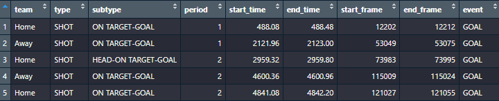
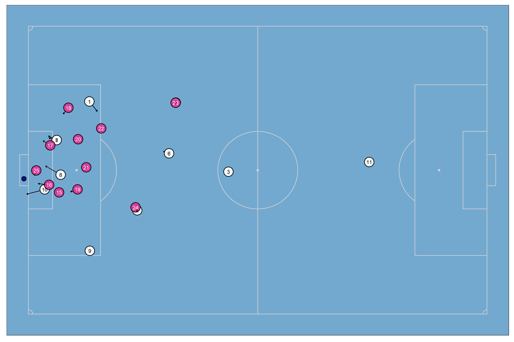

{soccerAnimate}
An R package to create 2D animations of soccer tracking data
How to install it?
# install.packages("remotes")
remotes::install_github("Dato-Futbol/soccerAnimate")In case you have a previous version and you would like to update the package, don’t forget to add the argument force = T
News
The following additions were added for the last version of the package (1.0.0 at April 28th, 2023)
Player stats calculations:
Minutes played and avg. speed
Instant velocity per sample (magnitude and direction) which allow to calculate some game level stats and to show this info on the visualizations
Total distances over the game and for different velocity ranges (you are able to choose between 2 kind of ranges)
Number of sprints made by each player
Player visualizations:
A plot showing where a specific player made a specific action (e.g. sprints)
Animation highlighting the player path on a specific time range
General:
- Pitch dimension could be customized
How to use it?
The package already has multiple functions to use, so it is usefulness to think about of them like a workflow for a either players or team level, as the following diagram shows:
The functions allows you to do the following tasks:
1) To get and process the tracking data
The function get_tidy_data() reads, tidies and joins the rawdata of both the Home and Away teams.
Currently only data from the provider Metrica Sports is supported. Even though you can download the open tracking/event data following this link, it is also possible to get the processed data directly using the function get_tidy_data() with the URLs of rawdata like the following example for the Game #2:
library(soccerAnimate)
home_team_file <- "https://raw.githubusercontent.com/metrica-sports/sample-data/master/data/Sample_Game_2/Sample_Game_2_RawTrackingData_Home_Team.csv"
away_team_file <- "https://raw.githubusercontent.com/metrica-sports/sample-data/master/data/Sample_Game_2/Sample_Game_2_RawTrackingData_Away_Team.csv"
td <- get_tidy_data(home_team_file, away_team_file)If you have another data provider or format, contact me in order to explore how can I help you adapting the code. I also could provide you some professional services related, even if you have tracking data from GPS devices. Check this link for more details.
2) To get events information
The function events_info() gets events information from the eventing dataset (Period, Team, Event, start and end time, start and end frame, etc.). You could get info for either shots, goals, free kicks or corner kicks. One of the current main usefulness of this is to know at which times/frames specific events occurs, then you will create both static plots and animations for those times/frames.
ed <- readr::read_csv("https://raw.githubusercontent.com/metrica-sports/sample-data/master/data/Sample_Game_2/Sample_Game_2_RawEventsData.csv")
goals <- events_info(ed, events = "GOAL")
# all_events <- events_info(ed, events = c("SHOT", "GOAL", "FREE KICK", "CORNER KICK"))
Team level
3) To create a 2D static plot
The function soccer_plot() creates a static plot of one specific and unique frame. It is useful to explore and pre visualize your data, aesthetic and method setting, before to create the animation (whose creation time will be longer). You are able to export this plots as PNG files.
soccer_plot(tidy_data = td, target_frame = 12212, export_png = T)
4) To create a 2D soccer animation
The function soccer_animate() creates 2D soccer animations using tracking data. You are able to set multiple arguments besides tidy tracking data, like the starting and the ending time to animate (in seconds, no frames!), geometric or spatial analysis method (options: “base”, “convexhull”, “voronoi”, “delaunay”), aesthetics setting (colors of pitch fill and lines, teams colors, titles, etc.), and some output settings. Most of this arguments are enabled also for soccer_plot() function.
# Example A: "base"
soccer_animate(td, 480, 490, "base", export_gif = T)# Example B "convexhull"
soccer_animate(td, 480, 490, "convexhull", export_gif = T, gif_name = "convexhull.gif")# Example C: "voronoi"
soccer_animate(td, 2112, 2122, "voronoi", export_gif = T, gif_name = "voronoi.gif")Player level
4) Player stats calculation and visualization:
With the function players_stats() you calculate for every player the minutes played, avg. speed, total distance and distance for different speed ranges.
Then you are able to visualize those stats with the function players_stats_graph() (Home team by default):
player_stats = players_stats(td)
players_stats_graph(player_stats, export_png = T)
5) To get players sprints information:
With the function sprints_info() you apply the needed data processing to get the number of sprints that every player for a chosen team (Home team by default) made. A sprint is considered when a player run a very high speed (higher than 7 [m/s]) for at least 1 second.
With this information you can observe a player ranking based on the number of sprints:
sprints = sprints_info(td)
library(dplyr)
player_sprints = sprints %>%
summarise(n_sprint = sum(start)) %>%
arrange(desc(n_sprint))
6) To create a player plot with specific actions:
With the function player_plot() you can create a plot showing where and when (labels show Time[s]) specific actions made by a player happened.
For example, the sprints made by the player 10 of the Home team:
player10_starts = sprints %>% filter(player == 10 & start == 1)
player10_ends = sprints %>% filter(player == 10 & end == 1)
player_plot(td, 10, player10_starts$n, player10_ends$n, export_png = T)
7) To create a player animation highlighting :
With the function player_animate() you are able to create a 2D animation for the specific time range when one specific player sprint happened.
player_animate(td, 10, player10_starts$n[1], player10_ends$n[1], export_gif = T)
General considerations
- A soccer pitch of dimensions 105x68 meters was considered by default.
- Reverted coordinates for Period 2: Teams are always attacking in the same direction.
Currently working on:
- Team positioning splitting by ON/OFF ball possession